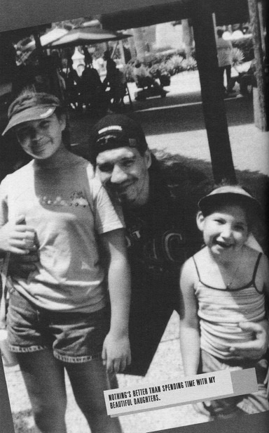

Глава 31
Перевод Александра Суменко для VSplanet.net
«Нам нужно поговорить», — сказала Викки, когда я однажды вернулся домой. Я сел и она призналась, что не может больше жить со мной и хочет развестись.
Я умолял ее остаться со мной. «Не сдавайся, — просил я. — Давай поработаем над этим».
Но она уже не могла. Мое поведение стало настолько невыносимым, что заразило ее презрением ко мне.
И не только Викки не могла вынести моего поведения. Мои друзья также стали беспокоиться.
Я никогда не появлялся на работе в плохих кондициях, но жесткие вечеринки каждую ночь сказываются на человеке. Я постоянно был в похмелье, и мой настрой становился все более негативным. Я перестал быть собой, что замечали другие люди.
Дин, Крис, Перри и я путешествовали вместе в первые несколько месяцев работы в WWE. Потом мы решили разделиться. Четверым мужикам не просто сидеть в одной машине, кроме того, я думаю, что Дин и Перри устали присматривать за мной.
Мы с Крисом продолжили ездить вместе. Храни его Господь, он всегда присматривал за мной. Он отличный друг. Он почти всегда был за рулем, потому что, во многом, боялся, что я засну за баранкой. Я устраивался на пассажирском сидении с парой бутылок вина, а он не спал всю ночь, переезжая из одного города в другой. В редких случаях, когда я оказывался за рулем, Крис не спал, чтобы подстраховать меня. Когда он отключался в машине, это было следствием истощения.
Крис заботился обо мне, но я вскоре выяснил, что это не всегда хорошо. Люди, заботившиеся обо мне, сами того не зная потакали мне. Они спасали меня от последствий моей зависимости. В общем, это только способствовало моему неправильному поведению. Они не осознавали того, что делали, искренне полагая, что действуют в моих интересах. Но, защищая меня, они позволяли мне продолжать свой разрушительный образ жизни.
Когда мои алкогольная и наркотическая зависимости вышли из-под моего контроля, Дин и Крис решили вмешаться. Дошло до того, что они больше боялись за мою жизнь, а не за то, что руководство узнает о моих проблемах. Чем бы помогла мне работа, если бы я умер и не смог на нее ходить?
Они не знали, что делать, но знали, что что-то делать надо. И решили поговорить с Джимом Россом, рассказать ему о своих переживаниях. Они не сдавали меня боссу, они искренне переживали о моем здоровье и безопасности.
Насколько я помню, со мной о своих страхах они не разговаривали. С другой стороны, очень возможно, что разговаривали, просто я этого не помню. Я тогда уже далеко ушел за черту и отъезжал все дальше каждый вечер.
Я понял, что они поговорили с J.R., когда посмотрел специальный выпуск на канале UPN о моей жизни. До этого я и не догадывался о том разговоре. Честно говоря, было больно это увидеть. И не столько из-за того, что они поговорили с J.R., сколько потому что не сказали об этом мне, когда я был в трезвом состоянии.
Когда я спросил об этом Дина, он просто ответил, что они сделали то, что считали нужным.
— Я бы не смог жить дальше, если бы нашел тебя мертвым в номере гостиницы, — сказал он. — И я ни секунды не сомневаюсь, что ты шел как раз таким путем.
Тот день начался, как обычно. Я вошел в здание, но прежде чем успел попасть в раздевалку, получил сообщение, что я должен встретиться с J.R. и Брюсом Причардом. Брюс был одним из главных в отделе кадров.
Они оба были очень озабочены. «Мы не собираемся осуждать тебя, — сказал J.R. — Мы пытаемся помочь».
Я был разгневан. Я думал только об одном: «Эй, а вы попробуйте работать с теми травмами, с которыми выступаю я».
Я пытался убедить себя, что таблетки помогают моему ахиллу, но по правде они устраняли лишь боль в моей голове. Когда я принимал таблетку, я не чувствовал горечи, что семья далеко, что мой брак разваливается, что дети едва меня знают. Физическая травма просто позволяла мне оправдать свою зависимость.
Встреча с J.R. и Брюсом не заставила меня обдумать мое поведение. Я еще не стал бороться с зависимостью. Вместо этого, я воспринял их слова, как угрозу: возьмись за себя, или мы тебя уволим.
Спустя неделю весь мир обрушился на меня. Raw проходило в Миннеаполисе. Выходные были особенно тяжелыми. У меня кончились таблетки и началась ломка. Алкоголь не помогал ни в каких количествах. Я звонил знакомым, но у всех было пусто. Я знал, что у одной подруги Викки всегда были кодеин и Валиум, поэтому позвонил ей с просьбой дать мне пару таблеток.
— Пожалуйста, не говори Викки, — попросил я ее. — Она сорвется, если узнает, что я заезжал к тебе за таблетками.
— Не волнуйся, Эдди. Мой рот на замке.
Естественно, стоило мне отъехать, как она уже набирала номер. Этого было достаточно, чтобы поссорить Викки и меня. Викки решила, что я отправился к ее подруге с другой целью. Стоит ли говорить, что мы сильно поругались. Я отправился в спальню, запил пригоршню таблеток крепким ликером и отрубился.
На следующее утро я буквально не мог встать. Хотя Викки уже устала от меня, она все равно проявила ответственность. Она собрала мои вещи, вытащила с кровати и отвезла в аэропорт.
Боже, я был в хлам. Едва мог стоять. Я запинался на каждом шагу, пока Викки пыталась провести меня на посадку. Я упал на эскалаторе, подвернув лодыжку и расцарапав плечо. К счастью, меня узнал охранник и помог Викки поднять меня на ноги.
В итоге я не попал на рейс в Миннеаполис. Учитывая мое состояние, я не мог попросить перенести рейс. К счастью, я знал некоторых людей в местных авиалиниях, и они с помощью Викки забронировали мне место на другом рейсе.
Викки почти не говорила со мной все это время. Когда я получил новый билет, меня посадили в кресло и укатили на посадку. Викки просто ушла в этот момент, но я был настолько плох, что даже не заметил этого. Я просто сидел без чувств на инвалидном кресле в ожидании своего рейса.
Спустя четыре часа меня разбудила стюардесса, которая и отвезла меня на самолет. Когда мы приземлились в Миннеаполисе, я все еще был в плохом состоянии. «Встряхнись Эдди, — сказал я себе. — Ты не можешь идти на работу в таком виде».
Прибыв на арену, я выглядел и чувствовал себя полным дерьмом. На входе меня увидели братья Дадли, которые проводили меня в раздевалку. Крис и Дин подошли и попросили меня оставаться на месте, чтобы никто из руководства не заметил, в каком я состоянии.
Естественно, прошел слух, что со мной что-то не так. Крис и Дин пошли поговорить от моего лица с J.R., но ничего не добились. J.R. — хороший, отзывчивый человек, но он еще и бизнесмен. Он дал мне выбор: ложиться в клинику или потерять работу.
Я так боялся потерять возможность кормить семью, что согласился:
— Ладно, — ответил я. — Да. Нет проблем. Поеду в клинику.
J.R. пообещал, что компания возьмет на себя все расходы. Они поместят меня в лучший центр по борьбе с зависимостью в стране — Talbott Recovery Campus в Атланте.
Но я не хотел ехать в Talbott. Это не только было далеко от дома, но и сама программа, как мне было известно, занимала много времени. Я хотел пройти 28-дневный курс во Флориде, чтобы быть ближе к Викки и детям.
Я заплакал со словами:
— Я не хочу быть вдалеке от детей целых четыре месяца.
— Извини, Эдди, мы должны отправить тебя в Talbott. Это лучший выбор.
— Пожалуйста, — всхлипывал я, — я пытаюсь не развалить семью. Жена хочет со мной развестись.
— Ну, и тебе есть в чем ее обвинить? — ответил J.R. — Ты же гребаный наркоман.
Это была самая обидная реплика в мой адрес за всю жизнь. Это было так больно, потому что я понимал, что это правда.
Я был все еще в плохом состоянии, когда вернулся во Флориду. Когда я позвонил Викки и передал свой разговор с J.R., она сказала мне не возвращаться домой. Сцена в аэропорту стала последней каплей. Она терпела уже довольно давно, и теперь сдалась.
— Если вернешься сюда, — сказала она, — я уйду.
Я стоял в аэропорту Тампы, чувствуя самое горькое одиночество. Тот день можно запросто назвать самым тяжелым в моей жизни. Но спустя пять дней все стало еще хуже.

Нет ничего лучше, чем проводить время с любимыми дочерьми